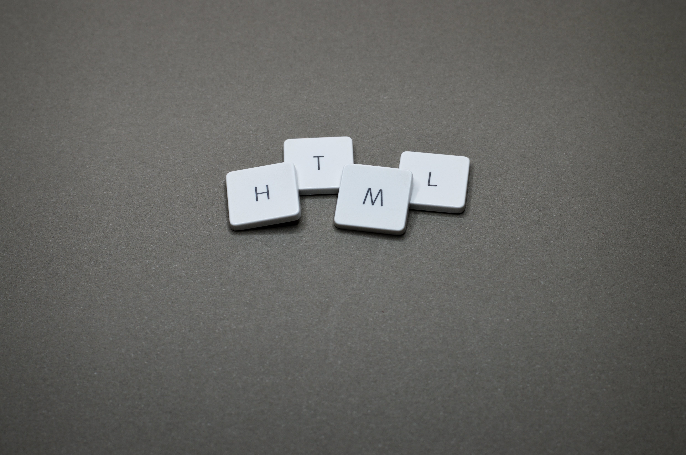

Web development
Getting started with web development. The challenges and what stood out to me and trying to conquer a sea of Frameworks

when i first started working with HTML and CSS. it was quite daunting. working with CSS was frustrating and i cant get things to work probably. HTML code seemed messy and difficult to navigate. but the more i learned about it things i got used to it and i started to work more fluently.
when i started to learn. i have heard of alot of frameworks, and i have no idea what to start with or what to learn. but the thing i discovered that i does not really matter. the important thing is to learn the fundamentals and learning a new framework wont be so dire. I started learning React and Node.js and Bootstrap for basics as well. because they were the most popular at the time and that could lead to a wider job pool.
what helped a lot when i started was using The Odin project and learning tools such as Flexbox and doing exercise and reading through documentation. making practice websites such as this one and trying everything myself and being dependent on watching tutorials
Im looking forward to diving deeper into web development and learning new technologies and building good looking, interactive websites. And learning more about servers, Databases and back-end in general. I quite enjoyed working with Databases and Data and i think I would have a fun time doing back-end stuff more than front-end. but maybe that would change later in the future.